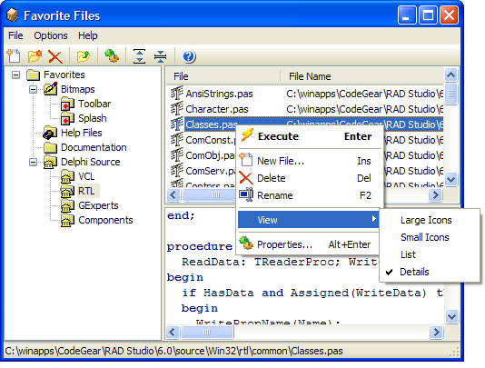

Favorite Files |
|
The Favorite Files expert provides a convenient way to organize commonly used files. You can create as many nested folders as you like, and each folder can be one of several types representing bitmaps, source code, help files, folders, glyphs, etc. To add a new folder, right click the folder pane and select the new menu. A window will appear prompting you to enter a folder name and type. The folder type is used to determine which icon is used represent the folder.
Similarly, you can add files to a folder by right clicking on the file pane and selecting new. An open file dialog will appear, from which you can select multiple files to add to the current folder. After adding the files, you can edit their properties by bringing up the property dialog. Each favorite item has a file name, a name, a description, and an execution type. The execution type determines what to do with the file when it is executed as follows:
A file viewer is available in this expert to preview files as they are selected. It can preview several file types such as PAS, DPR, RTF, HTML, BMP, SQL, C, CPP, TXT, etc. To speed up the process of selecting files, you can hide the preview panel via the Options menu.
Tip: You can drag and drop files from Windows Explorer into the file listing to quickly add new entries. 
|